Как исследование помогло выбрать сценарий настройки повторяющихся событий
01Проект
Спроектировала гибкую систему повторяющихся событий для мобильного календаря МойОфис Фокус.
Чтобы выбрать подходящий сценарий настройки повторов, провела исследование на пользователях реальных календарных приложений. Результаты помогли команде принять решение на основе данных, а не предположений.
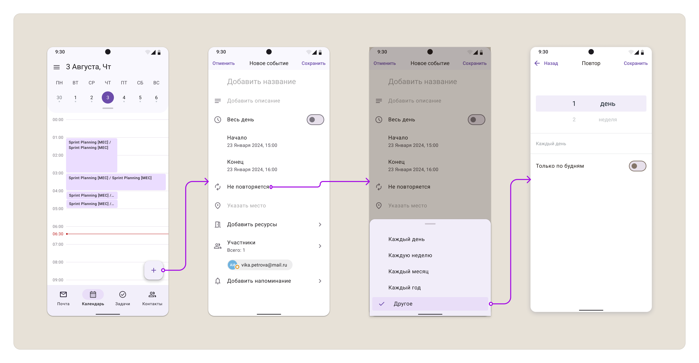
02Контекст
Один из ключевых заказчиков использовал сложные схемы планирования встреч и не мог хранить рабочий календарь в сторонних сервисах по требованиям безопасности.
Стандартных настроек повторов было недостаточно.
Параллельно внутренние пользователи регулярно сообщали о необходимости более гибкого управления повторяющимися событиями.
Функциональность стала одним из важных требований для развития продукта.
03Задача
Спроектировать сценарий настройки повторяющихся событий, который позволит пользователям:
- создавать сложные схемы повторения;
- редактировать отдельные события и целые серии;
- управлять уведомлениями участников;
- не теряться в настройках даже при сложных сценариях.
04Основная сложность
На этапе проектирования возник спор о выборе механики настройки повторов.
После анализа конкурентов я предложила использовать двойной барабан выбора периода.
Однако Product Owner предположил, что пользователи не поймут такой интерфейс и будут испытывать сложности при настройке повторов.
Вместо споров мы решили проверить гипотезу исследованием.
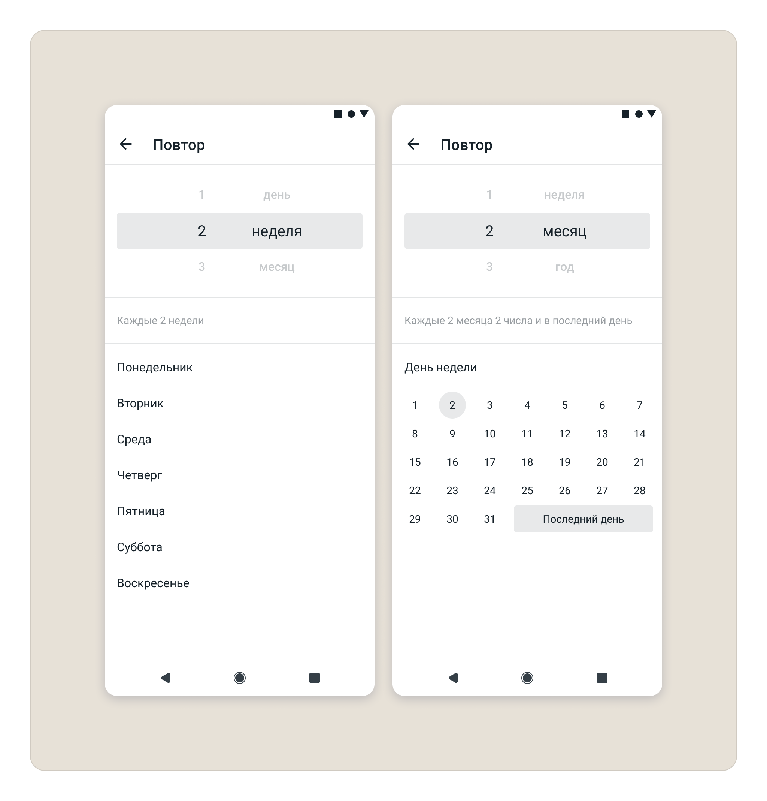
05Что я сделала
Проанализировала конкурентов
Я провела детальный анализ календарей iOS и Google, чтобы понять, как разные продукты решают настройку сложных повторов.
Анализ помог выявить сильные и слабые стороны каждого подхода и сформулировать гипотезу для проверки.
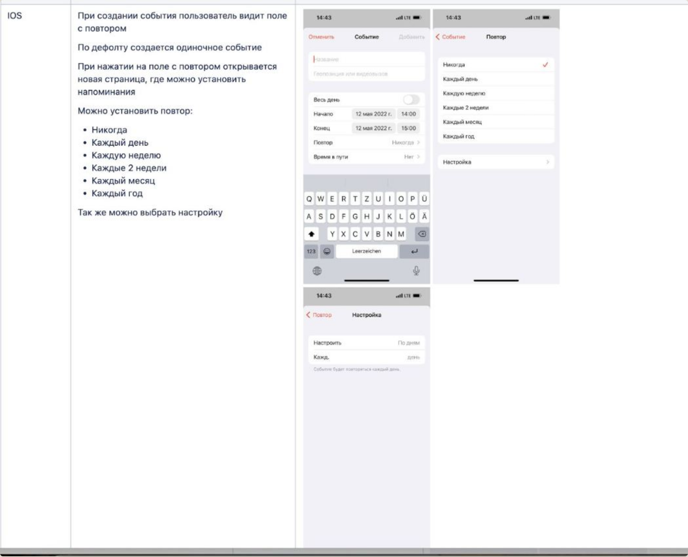
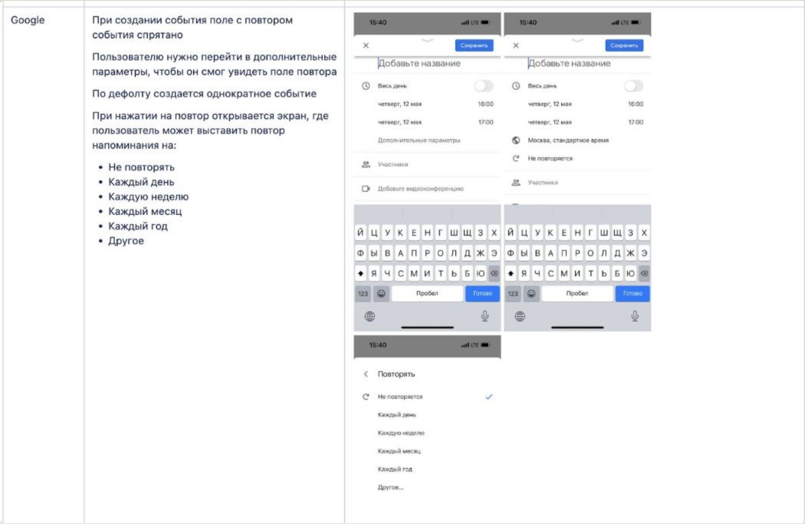
Проверила гипотезу исследованием
Вместо прототипа я решила протестировать готовые реализации конкурентов — Google Календарь и нативный календарь iOS. Это быстрее и дешевле, чем делать прототип с нуля.
В исследовании участвовали 7 пользователей Android и 6 пользователей iOS. Каждую группу поделила между исследуемыми компонентами.
Создать событие, которое будет повторяться каждые 3 месяца.
Пользователи справились с двойным барабаном без затруднений — интерфейс, который считали слишком сложным, не вызвал проблем.
В Google Календаре задать повтор на каждые 3 месяца не смогли 2 пользователя, у остальных 5 возникли сложности. Основная проблема — пользователи не понимали поле ввода с цифрой и не замечали подзаголовок.
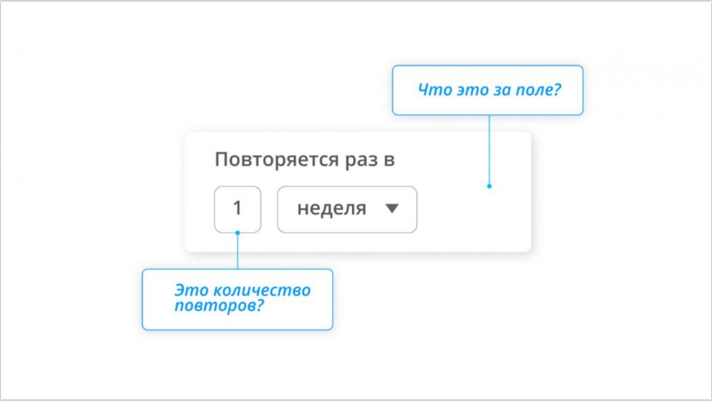
Спроектировала финальное решение
Я выбрала вариант с двойным барабаном и добавила сверху текст-подсказку со склоняемыми словами: «каждые 2 недели», «каждые 5 месяцев».
Это сохранило гибкость настройки и закрыло главную проблему, которую мы увидели в Google Календаре.
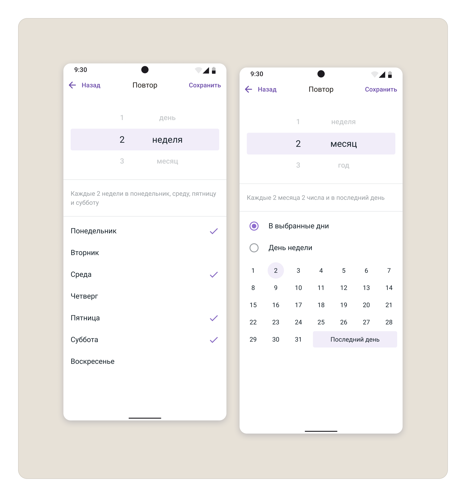
06Решение
В продукт добавили гибкую настройку повторяющихся событий.
Пользователь может:
- задавать дни недели и интервалы повторений;
- управлять всей цепочкой событий;
- редактировать как серию целиком, так и отдельные события;
- уведомлять участников об изменениях.
Создание события со сложным повтором
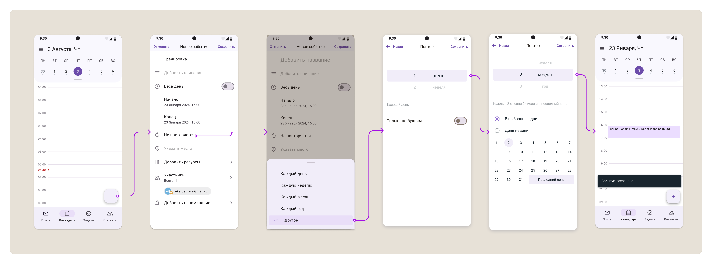
Гибкая настройка повторений
В зависимости от выбранного периода интерфейс настройки меняется.
Поддерживаемые периоды повтора:
- каждые N недель, в том числе в указанные дни;
- каждые N месяцев, в том числе в указанные дни или числа;
- каждые N лет, в том числе в указанные дни или числа.
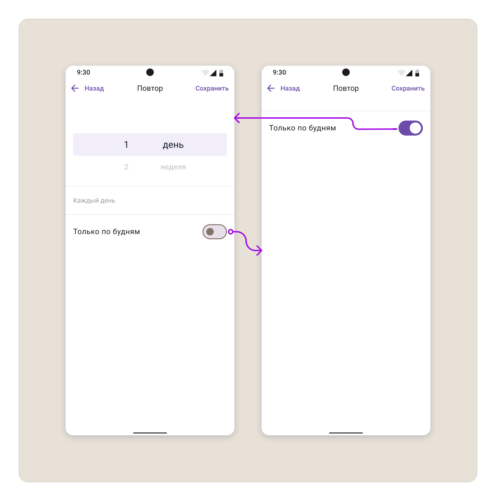
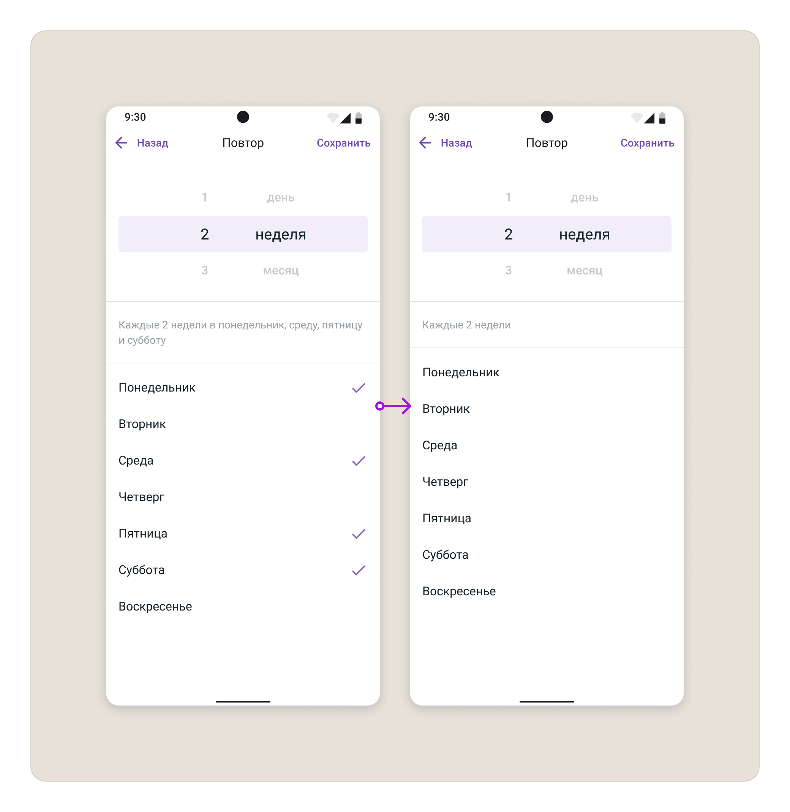
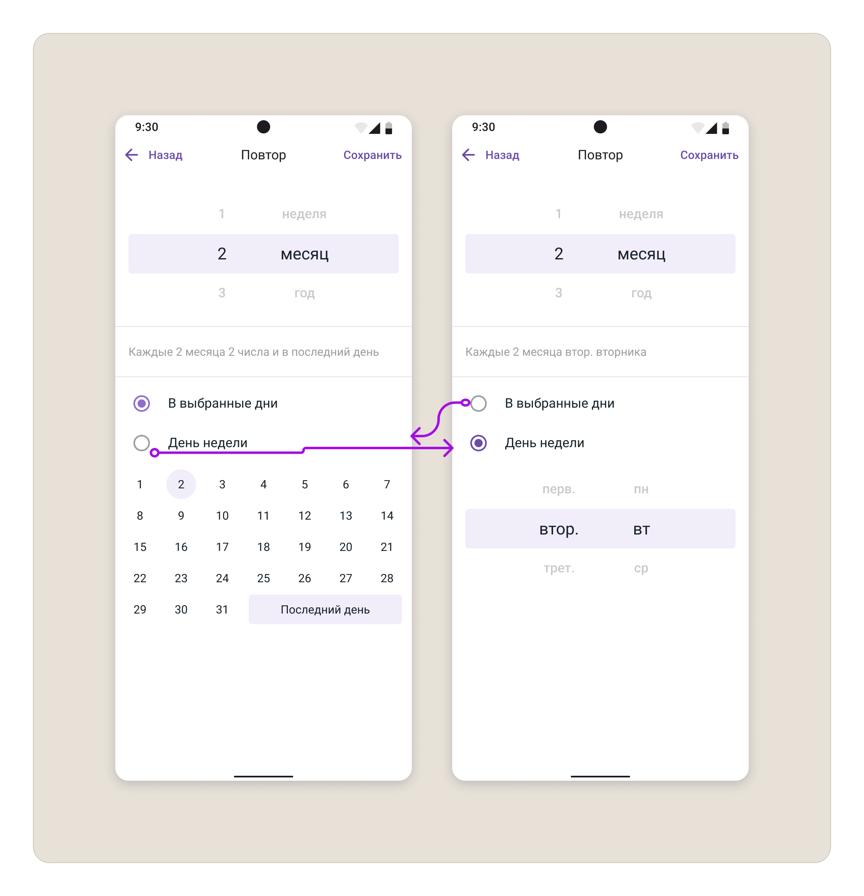
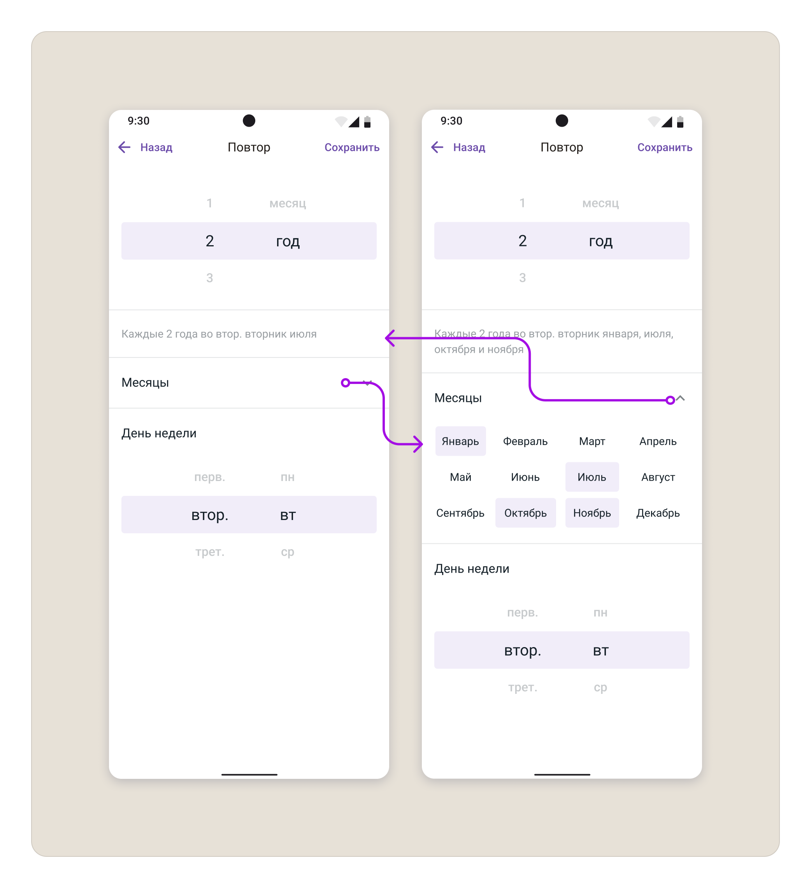
Редактирование серии и отдельного события
Для редактирования нужно было учесть два разных сценария: изменение всей цепочки и изменение одного события внутри серии.
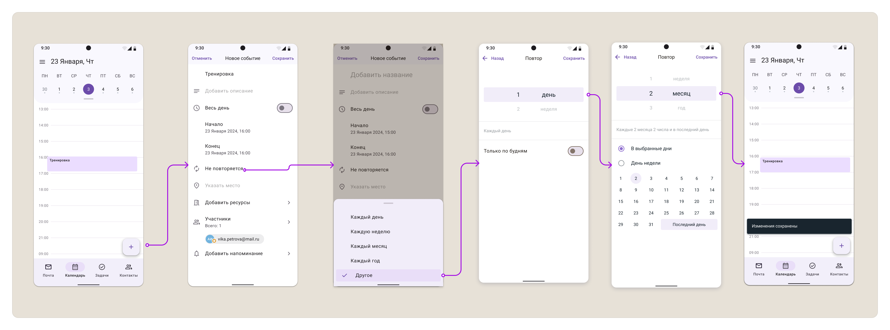
07Результат
Реализация функциональности сняла один из блокеров для заключения сделки с заказчиком.
Среди внутренних пользователей количество жалоб на отсутствие функциональности снизилось с 14 до 0.
Что было важно
Главная ценность проекта — не только в гибкой настройке повторов, а в том, что спорное интерфейсное решение было проверено исследованием.
Команда смогла выбрать механику на основе поведения пользователей, а не на основе внутренних предположений.